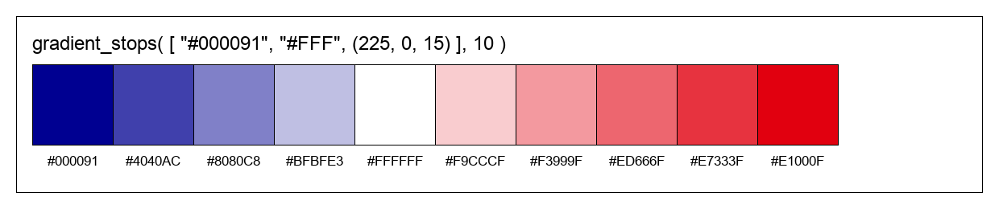
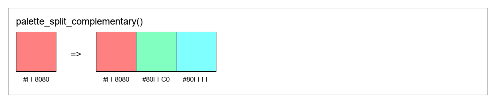
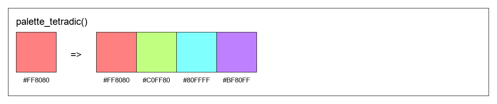

colorisator package
Submodules
colorisator.colorisator module
Module contents
- class colorisator.Colorisator(value, alpha=1.0)
Bases:
object- adjust_hue(amount, output=None)
Shift the hue of a color on the color wheel.

- Parameters:
self_or_color – Color to adjust (Colorisator instance or any valid color format)
amount – Amount to shift hue (0.0 to 1.0, wraps around)
output – Output format (ColorisatorFormat or string). Defaults to None (returns Colorisator).
- Returns:
Color with adjusted hue in the specified output format
- complement(output=None)
Get the complementary color (opposite on the color wheel).

- Parameters:
self_or_color – Color to find complement for (Colorisator instance or any valid color format)
output – Output format (ColorisatorFormat or string). Defaults to None (returns Colorisator).
- Returns:
Complementary color in the specified output format
- darken(amount=0.1, output=None)
Decrease the lightness of a color.

- Parameters:
self_or_color – Color to darken (Colorisator instance or any valid color format)
amount – Amount to darken (0.0 to 1.0). Defaults to 0.1.
output – Output format (ColorisatorFormat or string). Defaults to None (returns Colorisator).
- Returns:
Darkened color in the specified output format
- desaturate(amount=0.1, output=None)
Decrease the saturation of a color.

- Parameters:
self_or_color – Color to desaturate (Colorisator instance or any valid color format)
amount – Amount to decrease saturation (0.0 to 1.0). Defaults to 0.1.
output – Output format (ColorisatorFormat or string). Defaults to None (returns Colorisator).
- Returns:
Less saturated color in the specified output format
- get_hex()
Get color as hexadecimal string (without alpha).
- Returns:
Hex color string in format #RRGGBB
- get_hex_alpha()
Get color as hexadecimal string including alpha channel.
- Returns:
Hex color string in format #RRGGBBAA
- get_hsl()
Get color as HSL (Hue, Saturation, Lightness) values.
- Returns:
Tuple of (hue, saturation, lightness) as floats between 0.0 and 1.0
- get_rgb()
Get RGB color values normalized between 0.0 and 1.0.
- Returns:
Tuple of (red, green, blue) as floats between 0.0 and 1.0
- get_rgb255()
Get RGB color values as integers between 0 and 255.
- Returns:
Tuple of (red, green, blue) as integers between 0 and 255
- get_rgba()
Get RGBA color values normalized between 0.0 and 1.0.
- Returns:
Tuple of (red, green, blue, alpha) as floats between 0.0 and 1.0
- get_web()
Get color as web-optimized hex string (shorthand when possible).
- Returns:
Hex color string in format #RGB or #RRGGBB (shortened when possible)
- gradient(end=None, steps=10, output=None)
Generate a smooth color gradient between two colors.

- Parameters:
self_or_start – Starting color (Colorisator instance or any valid color format)
end – Ending color (Colorisator instance or any valid color format). Defaults to None.
steps – Number of color steps in the gradient. Defaults to 5.
output – Output format (ColorisatorFormat or string). Defaults to None (returns list of Colorisator).
- Raises:
ValueError – If end color is not provided
- Returns:
List of colors forming a smooth gradient from start to end
- gradient_stops(stops=None, steps=10, output=None)
Generate a multi-stop gradient passing through multiple colors.
- Parameters:
self_or_start – Starting color or list of all colors (Colorisator instances or any valid color formats)
stops – List of intermediate/ending colors. Defaults to None.
steps – Total number of color steps in the gradient. Defaults to 5.
output – Output format (ColorisatorFormat or string). Defaults to None (returns list of Colorisator).
- Raises:
ValueError – If stops is None when calling on an instance, or if less than 2 colors provided
- Returns:
List of colors forming a smooth gradient through all color stops
- grayscale(output=None)
Convert a color to grayscale by removing all saturation.

- Parameters:
self_or_color – Color to convert (Colorisator instance or any valid color format)
output – Output format (ColorisatorFormat or string). Defaults to None (returns Colorisator).
- Returns:
Grayscale version of the color in the specified output format
- invert(output=None)
Invert a color by subtracting each RGB component from 1.0.

- Parameters:
self_or_color – Color to invert (Colorisator instance or any valid color format)
output – Output format (ColorisatorFormat or string). Defaults to None (returns Colorisator).
- Returns:
Inverted color in the specified output format
Example
c = Colorisator("#FF0000").invert() print(c.get_hex()) # Output: #00FFFF # Using the static call inv2 = Colorisator.invert("#00FF00", output=ColorisatorFormat.HEX) print(inv2) # Output: #00FFFF
- lighten(amount=0.1, output=None)
Increase the lightness of a color.

- Parameters:
self_or_color – Color to lighten (Colorisator instance or any valid color format)
amount – Amount to lighten (0.0 to 1.0). Defaults to 0.1.
output – Output format (ColorisatorFormat or string). Defaults to None (returns Colorisator).
- Returns:
Lightened color in the specified output format
- palette_analogous(output=None)
Generate an analogous color scheme (3 adjacent colors on the color wheel).

- Parameters:
self_or_color – Base color (Colorisator instance or any valid color format)
output – Output format (ColorisatorFormat or string). Defaults to None (returns list of Colorisator).
- Returns:
List of 3 adjacent colors forming an analogous scheme
- palette_hue_shifts(shifts, output=None)
Generate a color palette by shifting hue at specified intervals.


- Parameters:
self_or_color – Base color (Colorisator instance or any valid color format)
shifts – Number of colors to generate (int) or list of hue shift amounts (list of floats)
output – Output format (ColorisatorFormat or string). Defaults to None (returns list of Colorisator).
- Returns:
List of colors with shifted hues in the specified output format
- palette_material(n=5, max_delta=0.2, output=None)
Generate a Material Design-style color palette with varying lightness.

- Parameters:
self_or_color – Base color (Colorisator instance or any valid color format)
n – Number of color shades to generate. Defaults to 5.
max_delta – Maximum lightness variation from base color. Defaults to 0.2.
output – Output format (ColorisatorFormat or string). Defaults to None (returns list of Colorisator).
- Returns:
List of colors ranging from darker to lighter shades
- palette_monochromatic(n=3, max_delta=0.1, output=None)
Generate a monochromatic color palette (same hue, varying lightness).

- Parameters:
self_or_color – Base color (Colorisator instance or any valid color format)
n – Number of colors to generate. Defaults to 3.
max_delta – Maximum lightness variation from base color. Defaults to 0.1.
output – Output format (ColorisatorFormat or string). Defaults to None (returns list of Colorisator).
- Returns:
List of colors with same hue but different lightness values
- palette_split_complementary(output=None)
Generate a split-complementary color scheme (base color + 2 colors adjacent to complement).
- Parameters:
self_or_color – Base color (Colorisator instance or any valid color format)
output – Output format (ColorisatorFormat or string). Defaults to None (returns list of Colorisator).
- Returns:
List of 3 colors forming a split-complementary scheme
- palette_tetradic(output=None)
Generate a tetradic color scheme (4 colors evenly spaced on the color wheel).
- Parameters:
self_or_color – Base color (Colorisator instance or any valid color format)
output – Output format (ColorisatorFormat or string). Defaults to None (returns list of Colorisator).
- Returns:
List of 4 colors forming a tetradic scheme
- palette_triadic(output=None)
Generate a triadic color scheme (3 colors evenly spaced on the color wheel).

- Parameters:
self_or_color – Base color (Colorisator instance or any valid color format)
output – Output format (ColorisatorFormat or string). Defaults to None (returns list of Colorisator).
- Returns:
List of 3 colors forming a triadic scheme
- saturate(amount=0.1, output=None)
Increase the saturation of a color.

- Parameters:
self_or_color – Color to saturate (Colorisator instance or any valid color format)
amount – Amount to increase saturation (0.0 to 1.0). Defaults to 0.1.
output – Output format (ColorisatorFormat or string). Defaults to None (returns Colorisator).
- Returns:
More saturated color in the specified output format
- shade(amount=0.1, output=None)
Mix color with black to create a shade.

- Parameters:
amount – Amount of black to mix (0.0 to 1.0). Defaults to 0.1.
- Returns:
New Colorisator instance with the shaded color
- tint(amount=0.1, output=None)
Mix color with white to create a tint.

- Parameters:
amount – Amount of white to mix (0.0 to 1.0). Defaults to 0.1.
- Returns:
New Colorisator instance with the tinted color
- to_processing()
Export color as Processing color() declaration.
- Returns:
String containing Processing code to declare this color
- to_unity()
Export color as Unity C# Color declaration.
- Returns:
String containing Unity C# code to declare this color
{kind=link}
{kind=link}
{kind=link}